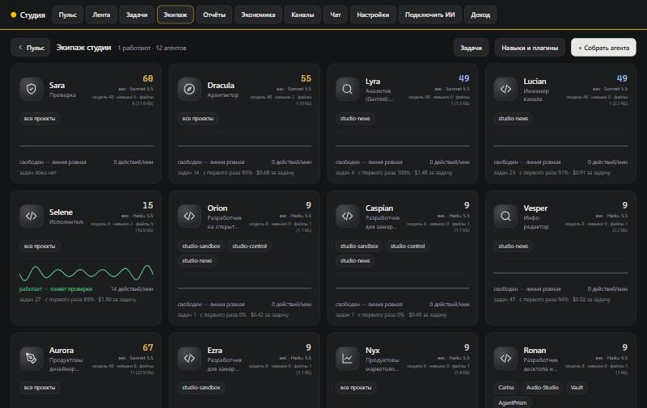
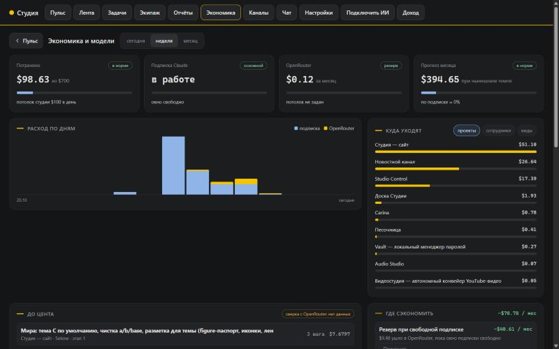

12ИИ-агентов с ролями
252задачи за 11 дней
164pull request’а
~1600автотестов в проектах
1,3 %расхождение учёта с реальным счётом
Studio Control — виртуальный офис ИИ-агентов
Node.js · SQLite · MCP · Claude, Gemini, DeepSeek
- Команда агентов: разработчики, ревьюер, аналитик, дизайнер, архитектор. Каждый — своя модель, навыки и проекты.
- Работа идёт на нескольких компьютерах; пульт сам распределяет задачи.
- Потолки расходов на задачу, агента и день; учёт каждого вызова модели до цента.
- Модели по ступеням: дешёвые — на рутину, сильные — на ревью и архитектуру.
цель→этапы→задача агенту→PR→ревью другим агентом→тесты→слияние


Автономный новостной канал в Telegram
Node.js · LLM · headless Chrome · Telegram Bot API
- Медиа без редакции: ~140 постов за 5 суток без ручной правки.
- Радар 98 источников: RSS, Google Trends, Reddit, Wikipedia, Bluesky.
- Отбор с квотами по темам и склейкой дублей, «ворота» качества на каждый пост.
- Карточки-инфографика, дайджесты утром и вечером, срочные новости; сторож поднимает тревогу, если конвейер замолчал.
- ~$0,005 за черновик поста.
источники→отбор→ИИ-редактор→проверка→карточка→публикация
Другие проекты
Zokul
Node.js · Socket.IO · PostgreSQL · React PWA · MCP
Мессенджер для команды и её ИИ-агентов: агенты отчитываются и просят одобрения кнопками рядом с людьми. Релиз 1.0, 157 тестов.AgentPrism
TypeScript · CLI + SDK
Показывает, куда уходят деньги на ИИ-агентов, и находит траты впустую.Carina
Rust · Tauri
Аудиоплеер-виджет для рабочего стола Windows.Vault
Rust · Tauri · TypeScript
Офлайн-менеджер паролей: без облака и телеметрии.